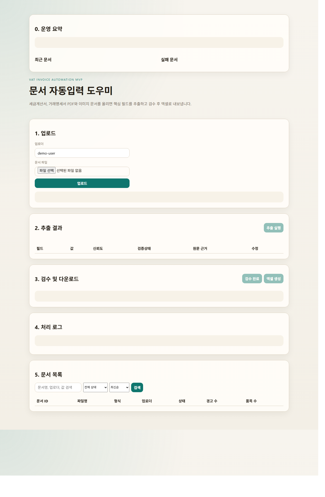

입력 시간 절감
PDF를 보고 옮겨 적는 시간을 줄입니다
공급자, 공급받는자, 작성일자, 금액, 품목 같은 반복 입력 항목을 자동 추출합니다. 사람은 모든 문서를 처음부터 읽지 않고 필요한 항목만 확인하면 됩니다.
Document Automation Demo
세금계산서와 거래명세서 PDF, 이미지 문서를 업로드하면 핵심 항목을 자동 추출하고, 사람이 필요한 부분만 확인한 뒤 지정 엑셀 양식으로 바로 출력합니다. 단발성 AI 체험이 아니라 반복 입력 업무에 맞춘 실무형 자동화 흐름입니다.
지원 형식: PDF, PNG, JPG, JPEG / 단건 및 다건 업로드 / 검수, 로그, 재처리 포함

Core Value
고객은 문서를 잘 이해하는 모델보다, 같은 형식으로 반복 처리되고 사람이 끝에서 통제할 수 있는 흐름을 원합니다. 이 페이지는 그 운영형 가치에 맞춰 정리되어 있습니다.
공급자, 공급받는자, 작성일자, 금액, 품목 같은 반복 입력 항목을 자동 추출합니다. 사람은 모든 문서를 처음부터 읽지 않고 필요한 항목만 확인하면 됩니다.
신뢰도 낮은 필드를 표시하고, 수정 이력과 로그를 남기며, 검수 완료 전에는 최종 결과를 확정하지 않습니다. 자동화와 책임 추적이 함께 갑니다.
대화형 응답으로 끝나는 것이 아니라 지정 엑셀 양식과 검수기록 시트까지 출력합니다. 바로 제출하거나 후속 업무에 연결할 수 있습니다.
Feature Scope
단순 업로드 데모가 아니라 운영 화면, 실패 재처리, 로그, 다건 처리까지 포함해 납품 가능한 자동화 도구처럼 보이도록 구성했습니다.
PDF, PNG, JPG, JPEG 형식을 지원하고 단건 및 다건 업로드가 가능합니다.
전자세금계산서와 거래명세서를 구분하고 공통 필드와 문서별 필드를 추출합니다.
텍스트 PDF와 이미지 문서를 분기 처리하고, 날짜와 금액을 정규화합니다.
신뢰도 낮은 필드를 표시하고 수정 이력, 처리 로그, 실패 문서 재처리를 지원합니다.
요약 시트, 품목 시트, 검수기록 시트를 가진 템플릿 기반 결과물을 생성합니다.
최근 문서, 실패 문서, 검색, 정렬, 상태 필터, 대시보드 지표를 제공합니다.
Workflow
고객이 이해하기 쉬운 건 한 번의 업로드와 한 번의 결과입니다. 실제 업무에서는 그 사이에 OCR, 구조화, 검수, 내보내기, 이력 관리가 들어갑니다.
Why Not Plain Chat
일반 ChatGPT는 문서를 읽고 설명하는 데 강합니다. 이 도구는 반복 문서 입력 업무를 같은 형식으로 처리하고 결과물을 남기는 데 강합니다.
| 항목 | 일반 ChatGPT 문서 업로드 | 문서 자동입력 도우미 |
|---|---|---|
| 목적 | 요약, 설명, 1회성 분석 | 반복 입력 업무 자동화 |
| 출력 형식 | 대화형 응답 중심 | 고정 필드 구조와 엑셀 결과물 |
| 검수 흐름 | 별도 없음 | 경고 표시, 수정, 검수 완료 단계 |
| 이력 관리 | 대화 기록 의존 | 로그, 수정 이력, 실패 재처리 |
| 다건 처리 | 비효율적 | 단건 및 다건 업로드 지원 |
| 실무 적합성 | 보조 도구 | 업무 프로세스용 도구 |
Verification
소개 자료에 적힌 숫자는 설명용 문구가 아니라 현재 저장소에서 생성한 실제 결과를 기반으로 정리한 값입니다. 샘플 평가, 데모 실행, 제출 PDF 생성 결과를 같은 페이지 안에서 보여줍니다.
Proof
현재 데모는 말로만 설명하는 수준이 아니라 업로드 화면과 관리자 흐름을 실제로 보여줄 수 있습니다. 제안 단계에서 이 화면 한 장이 신뢰도를 크게 올립니다.
고객은 문서를 올리고 결과가 나오는 흐름을 짧게 확인하고 싶어합니다. 이 캡처는 “도구가 이미 동작한다”는 신호로 작동합니다.
Sample Pack
실제 고객 문서가 없을 때도 레이아웃 편차를 설명할 수 있도록 박스형 양식, 스캔풍 세금계산서, 스캔풍 거래명세서 샘플을 시각 자료로 함께 넣었습니다.

박스형 배치와 영수 표기를 가진 양식형 문서를 합성해 레이아웃 편차를 테스트합니다.

배경 노이즈와 미세 기울기를 넣어 OCR 전제 문서처럼 보이도록 만든 샘플입니다.
거래명세서 유형까지 포함해 실문서 직전 단계의 데모 범위를 넓혀둔 상태입니다.
Target Audience
세무와 행정 문서처럼 입력 형식은 반복되지만 사람이 최종 검수해야 하는 조직에 가장 잘 맞습니다.
세금계산서, 증빙, 거래명세서 등 반복 입력과 엑셀 정리 비중이 높은 곳
문서를 받아 회계 시스템이나 내부 양식으로 옮겨 적는 업무가 많은 팀
막연한 AI보다 작고 빠르게 도입 가능한 자동화 도구를 원하는 조직
Next Step